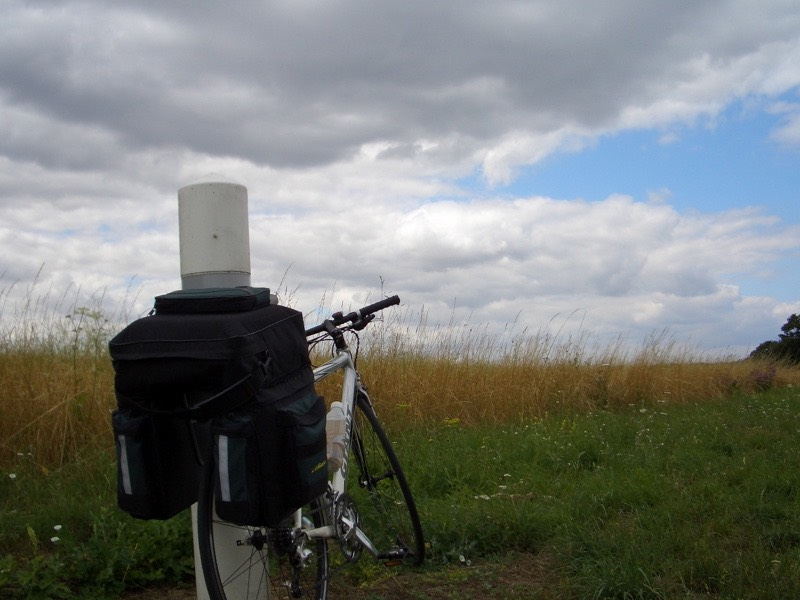

六點多，韓國姊妹花就醒來了，她們兩個今天要搭火車到比利時去。
跟英文很好的國際女孩（她還在睡）分道揚鑣。
走之前，把自己挖起來拍了她的照片，祝她們玩的開心∼
既然起來了，那就盥洗一下，起床時間將近八點，下樓用早餐。
牛角麵包、圓麵包、奶油、果醬、柳橙汁、紅茶。
跟昨天吃的差不多∼但吃完就沒有了，不能多拿。
狼吞虎嚥之後，拍張照片裝熟，然後就可以A走免費的茶包。
看來今天不用猛灌開水了，吃完早餐回房間，國際女孩終於醒了∼
這是38號房的卡片鑰匙
把茶包丟到水壺裡面，今天可以喝茶喝一整天。
跟前兩天比較起來，今天真是超冷的，一早外面就陰涼的看不見太陽，溫度大約20度吧。
出發啦∼目標，100公里外的博韋。
巴黎的北站
騎著騎著又看到了市集
麵包店
在街上跑的電車
聰明的自動噴水機，注意看有彩虹唷∼
為什麼說它聰明呢，除了它會轉轉轉噴水之外，當噴水柱要轉到街上時，就會自動停止，
以免將水灑到馬路上∼很炫吧！
考考你，這樣的標誌，到底能不能騎腳踏車呢？
如果你的答案是Yes的話，那你就沒有資格笑我，因為你也會一樣騎到高速公路去。
今天迷路的狀況比昨天還慘很多，在巴黎的時候，有巴黎的詳細地圖。
離開了巴黎之後，就只剩下全法的地圖可以用，比例尺太小，找路困難重重。
出巴黎之後，就開始看到田地，種的主要當然就是小麥啦，而且到了收穫的季節了，
沿路上都是收割的農人，機械化農業，相當的有效率。
走了好久，到1125才走到今天的目標道路，N17公路，值得紀念的是，第一次被外國人加油。
先往桑尼斯走，一開始覺得很涼快，後來覺得有點冷，怕受寒，就加上一件襯衫。
中午的時候，繼續吃昨天晚餐剩下來的麵包，邊騎邊吃。
1300，可能是因為養馬的緣故吧，這個小鎮飄滿了便便的味道。
雲很低的陰陰天氣，持續到過了中午太陽才露臉
猜猜看這是什麼機器？答案是割草機，他們在處理公路旁的雜草
一望無際的綠野∼
N17公路，居然只是雙向單線道，腳踏車被壓榨的幾乎沒有生存空間。
只剩下微薄的10公分可以騎，只要有大卡車經過的時候，都會被轟隆聲跟風壓給嚇到。
騎累了就靠牆休息一下吧，結果把牆坐垮了一個大洞
跟迷路奮戰的方式就是看地圖，看不懂還是得看，一切就靠它了。
古色古香的建築物
林蔭大道
動物大觀，有馬、乳牛、牛
超棒的街道，法國的房子都不高，幾乎沒有四城樓以上的房子。
最常見就是3樓了，那個尖尖的屋頂應該也算一層。
路邊的耶穌像
小心！會有鹿衝出來。其實這一路上，到處都是小鳥、松鼠、兔子、刺蝟的屍體。
蠻討厭的一點是，一路上不是平順的柏油路，而是這種凹凹凸凸的小石子路，
騎起來咚咚咚的，感覺很傷輪胎，希望不要爆掉呀∼ @@"
下午一點，倒達桑尼斯，我餓了...能不能上館子呢？
坐下樹陰下休息，吃昨天早上的法國麵包充飢。
水快喝完了，有點危機∼
之後問這個阿伯，雖然他講的是法語，但加減亂猜，是說往回走右手邊的停車場有公共廁所可以裝水。
吃飽也補充好飲水之後，從桑尼斯往博韋的方向移動∼一切依照計畫。

走著走了就上了N330公路，多虧路上又在施工（幫路樹修剪的樣子）
讓我可以沿路走路肩∼不用擔心被車撞。
路標顯示，距離博韋還有44公里，現在時刻下午兩點，照這樣看大約五點之前就可以到了。
到加油站的商店買點東西犒賞自己，Lays洋芋片？琳琅滿目的飲料，看起來不錯吃的三明治。
最後還是買了1歐元的芬達！但是跟昨天的口味不一樣。
另外還買了一包2.3歐元的巧克力餅乾，因為剛剛的午餐已經吃光了身上的乾糧，
要買一點備用比較安全∼
走N330，同條路之後變成N16公路，然後出現了禁行單車的牌子，讓我瞬間傻眼....
這是要我往回騎10公里回桑尼斯的意思嗎？？？拜託別開玩笑了！
硬著頭皮假裝自己看不懂標示牌繼續騎.....
但越騎越覺得危險，車子開的那∼∼麼快，大卡車一大堆，看來真的是騎上了高速公路。
可是明明都是N開頭的，為什麼N17可以騎，N16就不行呢？一定是幻覺。
那又接著騎了一小段路，後來看到交流道，還是為了安全著想，先下去再說吧。
看地圖才發現，N16要到博韋的這段路，是高路公路....
所以距離剩下44公里的理想，瞬間就破滅了，又要開始迷路的旅程。
下午四點，看到地圖上通往博韋的小路，D開頭的D200，之後一路往小路轉。
從D200->D123->D12。
下午五點的時候，距離博韋還是27公里，就快到了。
走小路比較好，雖然路很傷輪胎，可是風景很美麗∼下巴都快掉下來了。
騎沒兩步就停下來拍照，越騎是越慢，一點都沒有趕路的危機感。
美麗的鄉下房子
好舒服的天氣，讓FCR1也靠著休息一下。
有機器在收割小麥，那麼就會有什麼呢！？
噹噹∼卡通跟電影裡頭常出現的小麥方塊。
不喜歡正方形的沒關係，還有圓形的。
而且∼要多少有多少唷∼
國外的墓園，跟台灣的墓仔地相較其實差不多，只是墓碑換成十字架。
下午六點，騎完小路的D系列，接回N31大道，
再轉N1大道∼博韋，我來了。
路旁應該是露營地的地方，好多旅遊車。
晚上七點，抵達博韋
肚子餓扁了∼我要吃好料的 >"<
選擇KEBAB，一樣用一陽指點菜神功，隨手一指，就送來了這一盤。
比昨天吃的還大盤@@" 價錢則差不多，6.5歐元，再喝一瓶1.5歐元的啤酒犒賞自己。
吃飯的時候，眼前就是麥當勞，我想除非走投無路，不然我真不想去麥當勞吃東西。
這樣感覺太遜了∼七點半點菜，八點才好不容易全部吃光光，撐到快騎不動車子了。
接著就是今天的難題，要睡哪呢？
先從便宜的旅館找起來，騎著車在陣裡晃來晃去，無星級的跟一星級的旅館，全部客滿。
要價30歐元以下的，已經沒機會了，騎到一半看到旅遊諮詢服務中心，想去請教他們。
招牌上寫著24小時服務，過去一看居然大門深鎖。
繞來繞去看到一間超級大而且漂亮的教堂，大概就是國際少女說的15世紀的教堂了。
又停下來拍照，完全忘了自己今天還沒有住宿的地點。
隨便亂騎居然騎到火車站去了，站前有一間旅館，三星級，單人房79歐元，完全在預算之外。
繞了40分鐘，一間旅館都沒找到，目前時間是晚上八點四十分。
雖然天空還是跟白天一樣亮，但其實已經蠻晚的了，商店超過2/3都已經打烊。
要是這樣下去，連旅館都打烊的話，我就要露宿街頭了......
這是絕不允許發生的，感到危機之後，收起相機開始找旅館。
將近九點的時候，找到這家二星級的旅館。
價錢先不管，先問能不能把FCR1牽到裡面放比較重要，如果可以的話，貴一點也是可以接受的。
服務人員很客氣的說可以牽進來放，但是被幹走的話，他不負責任就是了。
也罷，不要讓FCR1露宿街頭就好。
只有我一個人，睡雙人床的雙人房，一晚是36歐元，算是OK的價錢。
要是能找到伴一起旅行的話，兩個人分也才18歐元，比住青年旅館還便宜。
九點入宿的時候，老闆說九點半就要關門了....還好我找到旅館，不然就等著完蛋。
問我明天早上要不要吃旅館的早餐？
免費的嗎？答案是否定的，而且是蠻貴的6.5歐元。
那麼...咳.....就算了，我自己想辦法搞定。
而且36歐圓的旅館超級高級的！裡頭有個人衛浴設備，好大好大的床，
雜誌、電視機∼（真的可以看，一直開到半夜，看會不會有18禁的節目）
結果沒有脫光光報氣象的主播，但是有法文發音的人魔跟魔鬼代言人可以看。
衣櫃拿來曬衣服∼
前兩天用變壓器將220伏特降成110伏特來使用，結果iBook用起來變得超燙！
然後iBook的變壓器，因為過熱而秀斗。
趕緊拿去泡冰水，感覺冰水也都快沸騰了。
拿起iBook的變壓器一看，其實它本來就支援220伏特的電壓了，沒必要經過降壓器多此一舉。
使用的結果，果然iBook不再發燙，充電器也很正常的使用了。
把iPod的電給充滿，今天多虧了它，排遣了好多寂寞的時間。
Z55的電池，貼紙上面寫說可以拍400張。這真是可惡的廣告不實。
這顆電池我從到法國的第一天就開始用，拍了超過1000張的相片，還不包括錄影跟聲音。
用了三天才把電給耗光，說只能拍400張，真是謙虛過頭了∼
床上的雜物都是包包裡的東西，今天路上都在吃isis送的人參糖，騎車就是嘴巴會無聊。
包包裝東西的藝術就是越不常用的東西，盡管往下層塞，經過了三天的旅行，
東西的重要性一一浮現，包包的結構也重新調整過了。
打文字的遊記蠻輕鬆的，大約一小時可以寫完，但是要整理照片，相當的麻煩。
（利用photoshop裁圖、調整圖片尺寸、縮減圖片體積，再加上文字註解）
弄到現在已經將近晚上十二點了，這邊沒有網路可以用。
本來想用房間裡的電話撥回台灣的免費撥接來上網，但只是異想天開。
先去洗個澡準備睡覺，明天要往亞眠前進。